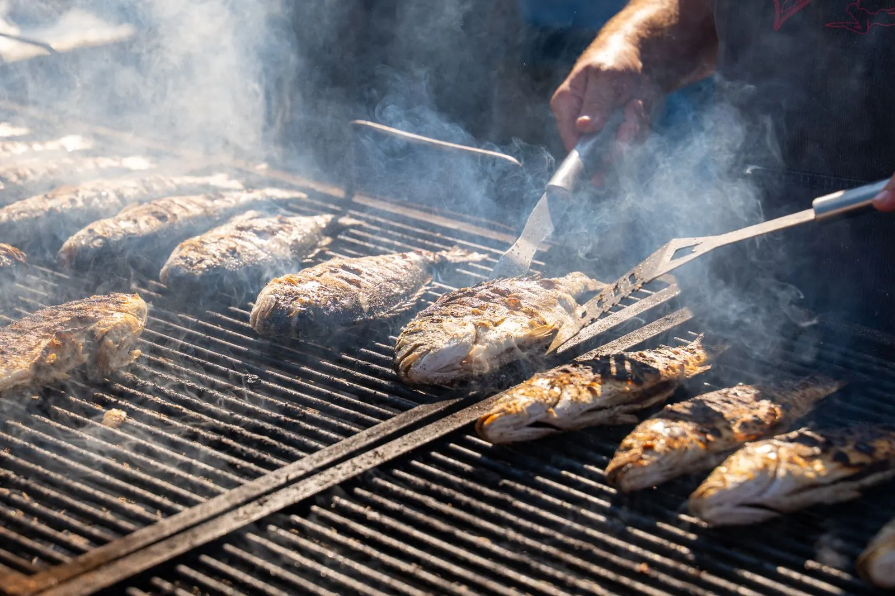
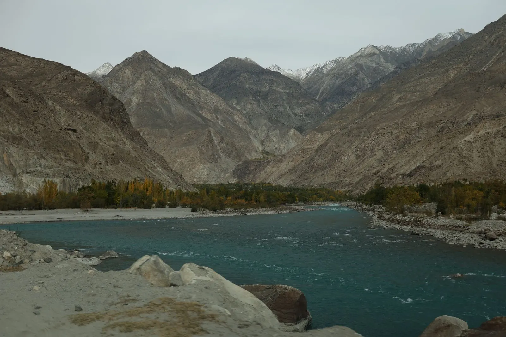
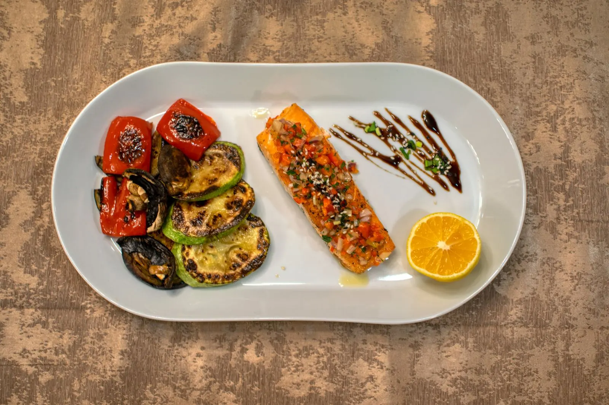
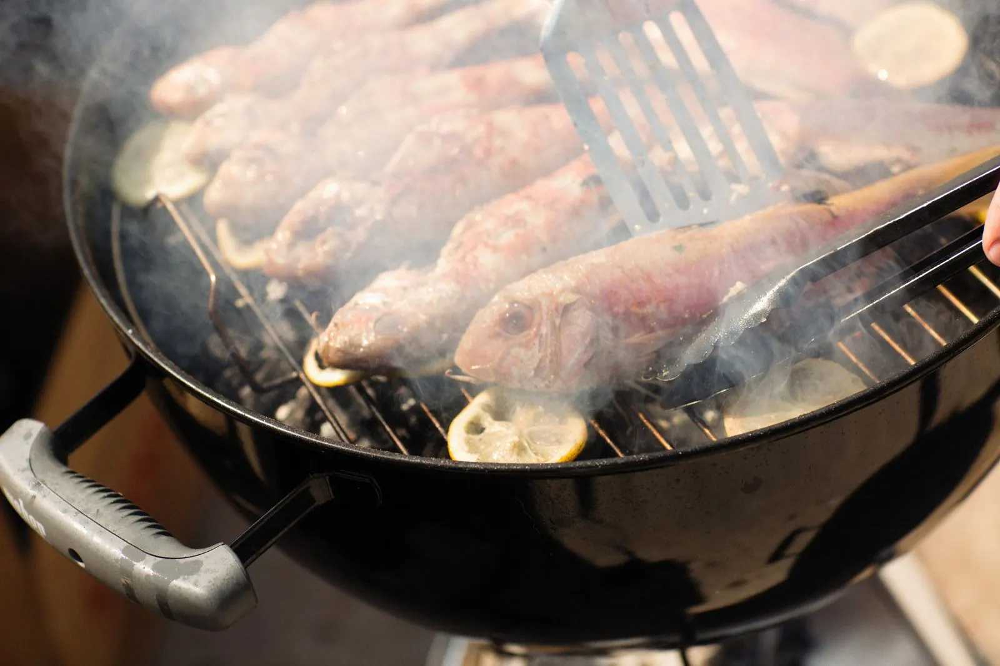
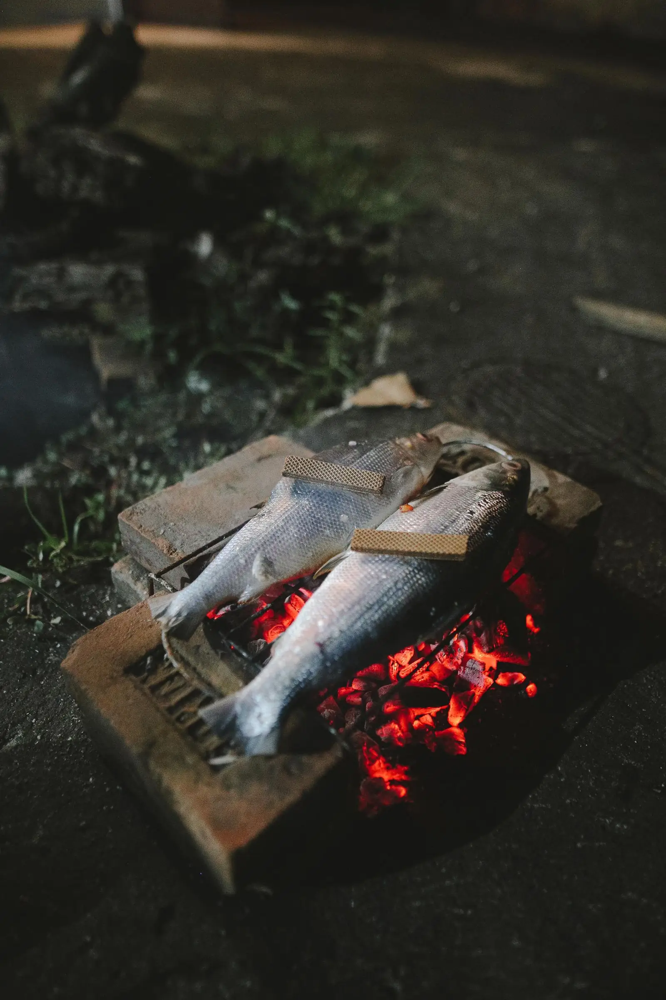
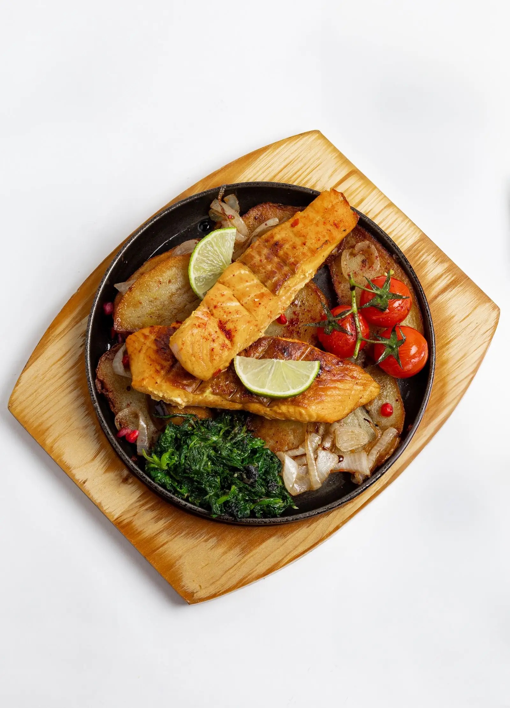
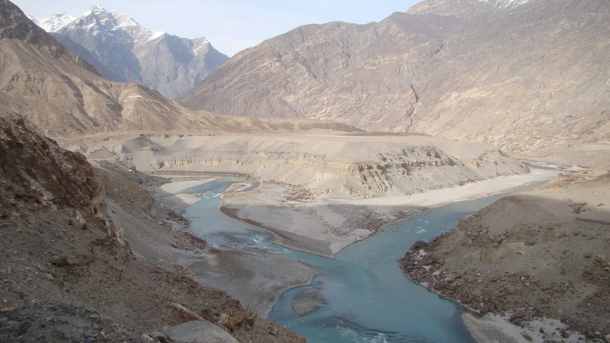
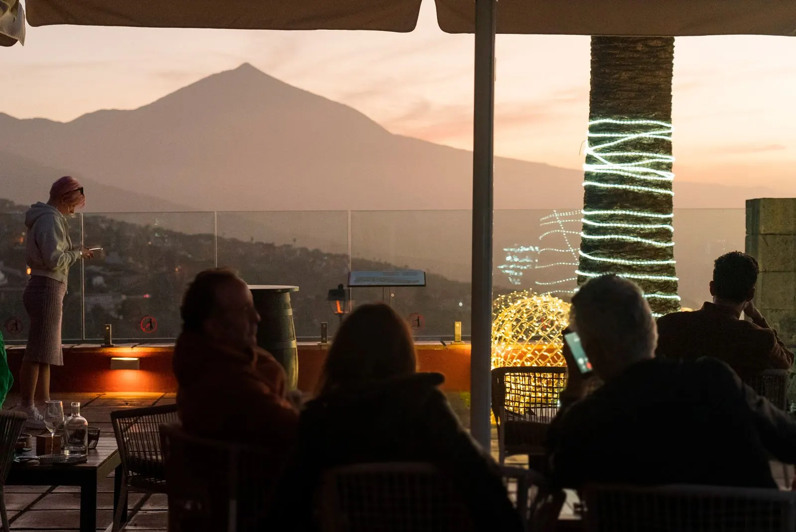
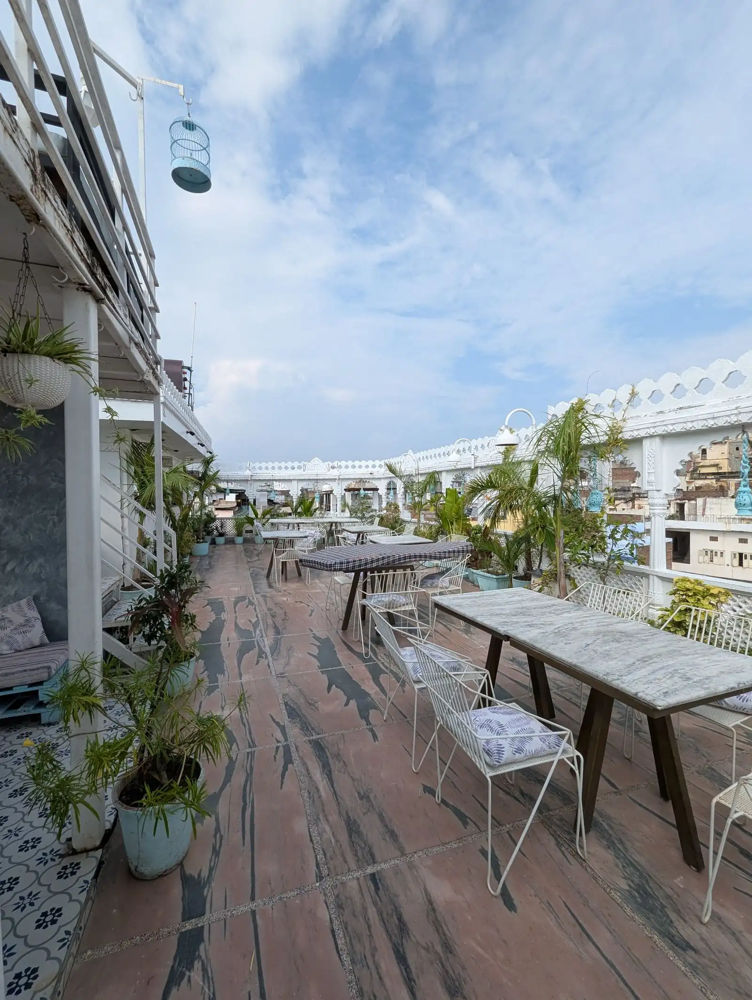
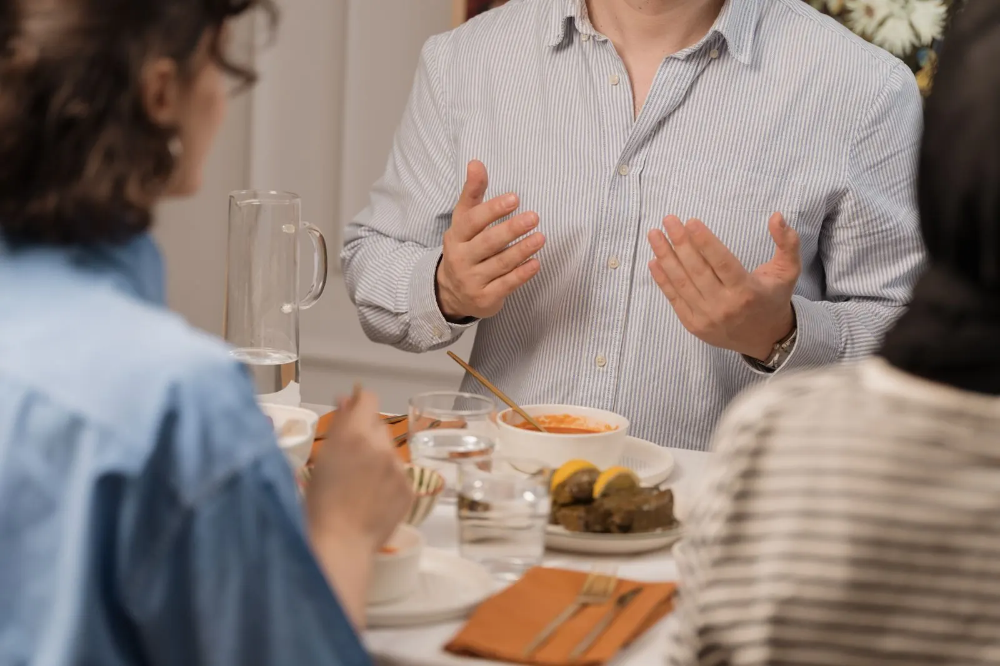

Grilled River Trout
The house signature and the Gilgit-Baltistan speciality — whole trout grilled over charcoal, the dish reviewers praise most.
House signatureRooftop restaurant · River View Road · Gilgit
Dawat sits on the rooftop of Indus Lodges, above the Gilgit River. The trout comes off the coals, the karahi comes out of the pot, and the mountains do the rest.
Pakistani · BBQ · Chinese · Indian — one rooftop, four kitchens' worth of appetite.

Whole fish on the grill — the way Gilgit likes it.
The Trout · Indus Lodges
Dawat is the rooftop restaurant of Indus Lodges, on River View Road in the Sonikot and Konodas area of Gilgit — the Gilgit River running just below the tables. Guests come up for the view and stay for the grill: river trout is the dish Gilgit-Baltistan is known for, and here it is the house speciality, grilled and served while the coals are still hot.
The menu runs wider than the river, though. Hunzai mutton karahi, mutton tikka and mixed BBQ platters share the table with palak paneer, cheese kabab, chicken malai boti and a special soup — Pakistani, BBQ, Chinese and Indian cooking, all from one rooftop kitchen.


From the River
Three steps, no shortcuts. This is how the dish that carries Dawat's name gets to your table.

01The trout goes straight onto the charcoal grill, turned over the coals until the skin crisps.

02Slow heat and smoke do the work — the fish cooks through gently, never rushed.

03Served hot and sizzling, with lime — the way a riverside trout dinner should arrive.

The Gilgit River runs below the rooftop, and the Karakoram rises on every side. It is the view reviewers mention first — before the food, and then again after it.


The Rooftop
Dawat is not a street-level restaurant. You climb to the rooftop of Indus Lodges, and Gilgit opens out below — the river, the road, the mountains. It is the setting that makes an ordinary dinner feel like an occasion, and the reason families book the big tables here.
Come at sunset, when the light drops behind the peaks, or late — the kitchen serves until 1:00 in the morning, Monday through Sunday.
Plan your visitWhy Gilgit Chooses Dawat
Across 355 Google reviews and 30 Tripadvisor reviews, the same five themes keep appearing.
Mountain and river views from the rooftop of Indus Lodges — the setting reviewers mention first.
The grilled river trout is praised again and again — the dish that defines the restaurant.
Karahi, tikka and mixed BBQ platters earn the same praise as the fish.
Reviewers note the staff and the owner by name for their welcome — the room feels looked after.
A regular choice for family gatherings and Eid get-togethers — big tables, shared platters, long evenings.

Gatherings
Dawat is where Gilgit families gather — for birthdays, for Eid get-togethers, for the evenings when the whole family is in town. Shared platters, trout for the table, karahi in the middle: the menu is built for eating together, and the rooftop has room for it.
For a large table, call ahead — 0346 3599999 — and the restaurant will hold your spot.
Call to reserve a family tableFrom the Grill & the Kitchen
Tap any photo to see it larger.
Good to Know
On the rooftop of Indus Lodges, River View Road, Gilgit (Sonikot / Konodas area), Gilgit-Baltistan 15100 — right by the Gilgit River.
Grilled river trout — the Gilgit-Baltistan speciality — along with Hunzai mutton karahi, mutton tikka and mixed BBQ platters.
Pakistani, BBQ, Chinese and Indian — all from the one rooftop kitchen.
Monday 6:30 AM to 1:00 AM, and Tuesday to Sunday 7:00 AM to 1:00 AM. The kitchen serves late, every night.
Call the restaurant on 0346 3599999. The Indus Lodges (hotel) line, 0355 5999952, is the fallback if the restaurant line is busy.
Yes — reviewers regularly mention family gatherings and Eid get-togethers at Dawat. For a large table, call ahead so the restaurant can hold your spot.
Visit
Restaurant: +92 346 3599999
Indus Lodges (hotel) line: +92 355 5999952
| Monday | 6:30 AM – 1:00 AM |
|---|---|
| Tuesday | 7:00 AM – 1:00 AM |
| Wednesday | 7:00 AM – 1:00 AM |
| Thursday | 7:00 AM – 1:00 AM |
| Friday | 7:00 AM – 1:00 AM |
| Saturday | 7:00 AM – 1:00 AM |
| Sunday | 7:00 AM – 1:00 AM |
Call ahead, come hungry, and stay for the view.
Call 0346 3599999